|
|||||||||||||||||||||||||||||||||||||||||||||||||||||||||||||||||||||||||||||||||||||||||||||||||||||||||||||||||
|
|||||||||||||||||||||||||||||||||||||||||||||||||||||||||||||||||||||||||||||||||||||||||||||||||||||||||||||||||
  |
|||||||||||||||||||||||||||||||||||||||||||||||||||||||||||||||||||||||||||||||||||||||||||||||||||||||||||||||||
OLD STORIES - Season 5 2007/08 |
|||||||||||||||||||||||||||||||||||||||||||||||||||||||||||||||||||||||||||||||||||||||||||||||||||||||||||||||||
TML - Half a Decade & Still Going Strong!!
Legends Sports Bar & Cafe, Roppongi, June 27th, Chiba Libra Run Out of Juice in Nagano.
ALT East Japan tournament. Sugadaira, Nagano, Weeked 14th & 15th June,
It's All a Rush in BangkokPatana International School, Bangkok. May 31st~June 1st. Baby Brits Topple Sala
ASIJ, Saturday 7th June, Cap'n Kirk Reaches Final Frontier.
Hachioji Park, Sunday 15th June, Top vs Bottom, yet Honours EvenHachioji Park, Sunday 15th June, Close Encounters of the Relegation Kind
Fuchu no Mori, Saturday 31st May, Osamu Hatrick Keeps the Embassy Up
Daito Bunka, Sunday 25th May, The French ConnectionHodogaya Koen, Sunday 25th May, Fat Lady Sings Sweetly for Old BoysMisato Saturday 17th May, JETS Hand Vags Relegation, Keeping Own Hopes Alive.Hanno, Saturday 17th May, Mud Therapy Fails to Rejuvenate Old BoysTodoroki Sunday 11th May, It's a Long Way to the Top.Hachioji Koen Saturday 3rd May, Top 2 to Meet in FJ Cup FinalHachioji Park Saturday 26th April,
CELTS Dump JETS to Bottom.Hachioji Koen Saturday 26th April, Promotion - Sealed with a KissMisato Sunday 27th April, Bad Workmen Blame Technicolour ToolOiFuto Sunday 20th April, Final Shot at the 'Grassy Knoll'??YC&AC Sunday 20th April, RSPCA to Investigate Cruelty to Panthers
YC&AC Sunday 20th April, Panthers Lacking Grrrr!!YC&AC Sunday 20th April, Somi – The Lion King!YC&AC Sunday 20th April,
Yama Grabs 3 Points for HibsHodogaya Koen Saturday 12th April, Cup-tie Rule Sees BFC Through to Semi-FinalsTokyo Wednesday 9th April, Celts Safe for Another SeasonMisato Sunday 30th March, Back to Reality!Misato Sunday 30th March, B.E.F.C Survival Fight Begins.OiFuto dirt, Sunday 30th March,
Swiss Fail to Produce Goods Again.OiFuto dirt, Sunday 30th March, BFC On Last Legs??Yoyogi Park, Saturday 22nd March,
Sala Edge Celts in Crucial WinMisato Sunday 23rd March,
Five Star HibsMisato Sunday 23rd March, Swiss Make a SplashHachioji Park Thursday 20th March, 13th Month a Jinx!YCAC Sunday 16th March, Mikey Mops Up.
Hachioji Park Suday 9th March, Winning Ugly!YCAC Saturday 8th March, Mugged Again!YCAC Sunday 9th March, Old Boys On Top Despite Missing MembersYCAC Sunday 9th March,
There Will Be BloodHachioji Park Sunday 9th March, YCAC Snatch Defeat from the Jaws of VictoryASIJ Sunday 2nd March, 'Bonjour' from Shetland!ASIJ Sunday 2nd March, Mushashi Shigaki RevisitedASIJ Sunday 2nd March, Super Vags!OiFuto Dirt Saturday 1st March, What a BlowMisato Sunday 24th Feb, Inter Edge Past Old Boys
YCAC Saturday 16th Feb, Embassy Rocked by Late WinnerYCAC Sunday 17th Feb,
Field Of D…ust!Misato Sunday 17th Feb, Mid Table MiseryTodoroki Sunday 17th Feb,
S.A.D.Misato Sunday 17th Feb, JETs Sliced & Diced by HibsHachioji Park Monday 11th Feb,
Albion Avalanche Buries JETsHanno Saturday 9th Feb, A Perfect HalfYC&AC, Saturday 9th February, 'O my Brothers'
Hachioji Park Saturday 9th Feb, (READERS WARNING - this story can screw with your eyes & brain!!) Lions Scratched But Untamed.Awaiting CapitulationHachioji Park, Sunday 27th January,
BFC Back on Top with 5-1 WinDaito Bunka Uni, Saturday 27th January, A Point Gained is 2 points Lost!!YC&AC, Sunday 27th January,
Panthers Say 'NO' to Getting StonedDaito Bunka Uni, Saturday 27th January, Long Way to Go!Daito Bunka Uni, Saturday 26th January, Embassy Hold High-Flying HibsHodogaya Koen, Saturday 26th January, Clash Grab First Victory
Misato, Sunday 20th January, YCAC Regain Composure to Upset HibsYC&AC, Sunday 20th January,
Geckoes Thunder On.Misato, Sunday 20th January, Sala Bane of YCACHachioji Park, Sunday 13th January, Kitchen Sink BluesHachioji Park, Monday 14th January,
Clash No Match for Lions.YC&AC, Sunday 13th January, Panthers finally uncaged at YCAC!
YC&AC, Sunday 13th January, Geckoes Make Most of Mud.Oi Futo, Saturday 12th January, YCAC Go Through Hell to Claim Silverware.
Footy Japan / IFG Asia New Year Soccer 7's, 2008. Oi Futo Dai Ni, Oi Chou Rinkai Koen. Saturday, January 5th & Sunday, January 8th, 2008. Oi Futo, Saturday 22nd December,
Hibs Go Top For Christmas.Hachioji Park, Saturday 15th December, SickNote Special Sinks EmbassyHachioji Park, Saturday 15th December,
Iron, Like Lions, Against ZionYC&AC, Sunday 16th December, Celts frustrate BFC
Hachioji Park, Saturday 15th December, Back to the Brawing Doard
Misato, Sunday 9th December, Vags Learn No Lessons From HistoryYC&AC, Saturday 8th December, Celts 'Never Say Die' Attitude Wins WSG Respect
|
|||||||||||||||||||||||||||||||||||||||||||||||||||||||||||||||||||||||||||||||||||||||||||||||||||||||||||||||||


| 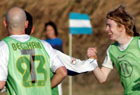 |
|
Sayonara Danny boy, The young lad bagged the first goal in his final game for BFC. |
BFC do Swiss on Mud Patch
Misato, Sunday 9th December,
Skinny boys Dan and Sho scored as BFC beat the Swiss Kickers 2-1 on Misato's cabbage patch, despite the best efforts of the ref to snatch a late equaliser for our European cousins.
We climbed the ridge. River and green fields spread out before us. A pleasant surprise. Typically, however, we were ushered to the far corner of the vast expanse of green to a distant cabbage patch. Then we clocked the ref, decked out in grey socks -- primary school-style. Pot Pourri! more ...
AH.
| 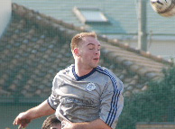 |
|
Face only a mother could love, but Tyson Masar scores goals!! |
YC&AC Shock Champs.
YC&AC, Sunday 2nd December,
"Maggie Thatcher, can you hear me? Maggie Thatcher, I have a message for you: Your boys took a hell of a beating!"
England losing to Norway in the WC Qualifiers was a shock back in 1981-it wouldn't be now of course- prompting the crazed outburst from some Norwegian whack-job. Possibly the 2nd most famous commentary about the footballing Brits in history (c'mon..."some people are on the pitch"....?) more ...
ST.
Back on Track For Old Boys
YC&AC, Sunday 2nd December,
Having shamefully surrendered their 100% record the previous weekend by failing to put a team together to face Stoneds, the Albion got their Division 3 title challenge back on track on Sunday with a hard-fought win over YCAC 2nds. more ...
TC.
| 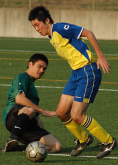 |
|
Nice new turf at Hodogaya is a pleasure to slide on says Hibs new signing Tomo Smith. |
Shambles!
YC&AC, Sunday 2nd December,
BFC were beaten for the first time in over a year by a determined YCAC side. 1-0 at halftime. 4-2 YCAC the final score. The pre-match team talk might as well have been in Albanian. English doesn't seem to work. more ...
AH.
Andre the Destroyer
Hodogaya, Saturday 1st December,
The Hibs went into this one expecting a tough one from the Geckoes, and flattering scoreline aside, we got one. They dominated our midfield and stretched our defense all match, but were repeatedly caught by our counterattacks, especially as the game wore on.
Hotogoya Park is now a beautiful, spanking-new artificial pitch, our first nice ground of the year. With Misato lurking next week, in the first half we tried to take advantage and work short passes at every opportunity, but were repeatedly picked off by the hard-charging Gecks. more ...
JA.
Toru's Torpedo Sinks Vagabonds
Misato, Sunday 2nd,
Same opposition two weeks running, was almost like a home and away tie. Both teams seemed to have changes from the previous week due to injuries, hangovers and lads just not bothering to get out to Misato at another unearthly hour. Celts didn't get a full warm up due to the bizarre patterns of traffic in Tokyo's outer-rims, it was like spurs defence, didn't move for about 30 minutes and then suddenly opened up to allow anyone through. more ...
GD.
VICTORIOUS IN PHUKET |
 |
|
Hibs won their 2nd Phuket 7's Cup in a row beating the Shanghai Krauts, more |
Lions Roar On!
Misato, Sunday 2nd,
The first Sunday of December was blessed by beautiful weather, and was to hold the awaited clash in Division 2 between 2 unbeaten teams, Lions, with a 100% record, and Maritizio, unbeaten in 4 games.
Lions lined up with their full squad, whilst Maritizio although looking strong, did have a guest keeper from Vags between the posts.
Maritizio started the game strongly, and showed they meant business by notching the first attempt on goal via a powerful header from their tall striker, from the edge of the box, but not troubling Lions' safe hands, Orlando (aka Spiderman). more ...
HS.
Reservoir Dogs
Misato, Sunday 2nd December,
Vagabonds lost 2-0 to Kanto Celts between 10am and 12pm today. It has to be considered one of the poorest Vags performances of the season yielding a record number of injuries, about 6 players, and culminating in a reservoir dogs like bloody final scene in the Celts six yard box. more ...
GQ.
Swiss Struggle Past Jets.
| 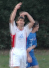 |
|
Kirk signal a change after scoring & pulling his hammy! |
OiFuto, Saturday 1st December,
Swiss vs. Jets on Saturday, great day for a match at Oifuto as the pitch appeared to have been unused following the light rain on Friday evening. Other than the strange "circle" in midfield which even caused the referee to reprimand encroachers for being aggressive, the smooth surface at Dai 1 is typically a joy to play on. Unfortunately, this writer's age is becoming more of a problem as covering the expansive pitch at Oifuto has me begging for 5 a side on Thursday nights. more from Swiss...
KN.
Another game, another narrow defeat. The Saitama Jets are a team who are striving to keep their season alive to the very end with another exciting relegation battle. The Jets aren’t panicking yet, with over half the season still to play there is still time to force a couple of scrappy wins and prolong the agony, or if you prefer, adventure, for yet another season. more from JETs...
RK.
YCAC Can't Make Swiss Roll.
YC&AC, Sunday 25th November,
The Swiss have been zealously guarding their neutrality ever since the Napoleonic Wars. The odd World Cup Qualifier in Turkey aside, they have managed to avoid a battle on foreign soil for 200 years
Penknife wielding, holey cheese eating surrender monkeys they may be but they are certainly not above a bit of highway robbery now and then. Anyone with the misfortune to be at YC&AC last sunday lunchtime could surely bear witness. more ...
ST.
 |
|
Winning smiles, Toblerone Dhugal - scorer & Sam the provider celebrate Salas goal. |
I'll have the Toblerone Darling.
The Haggis is Off.
YC&AC, Sunday 18th November,
Stirling Bridge, Bannockburn, the Thin Red Line, David Livingstone, Sir Alexander Fleming, Stephen Hendry, the Dhougies. It all seemed so long ago on Sunday morning. How the mighty have fallen.
Sala arrived at YCAC with the bare 11 while their tartan contingent were snuggly tucked up in their kilts (quilts) licking their wounds from their predictable failure to qualify for Euro 2008 and even more predictable hangovers. more ...
SB-S.
Hibs Still in the Game.
Misato, Saturday 17th November,
The Hibs' glut of games at oft-canceled Misato this year meant this was our first match in four weeks. We showed up with bare 11 and not sure what to expect from BEFC. more ...
BC.
 |
|
Panther Chris Batterham held in check by YCAC's Paul Wood. |
YCAC Keep Panthers Caged
YC&AC, Sunday 18th November,
YCAC Seconds record prior to this game had such pleasing symmetry - Played 4, Won 2, Lost 2, Goals For 11, Goals Against 11 - it seemed a shame to play and muck those well-balanced stats up. But duty called.........
A typically bright and blustery day at the YCAC for the 5th game of this campaign saw us set to play league new boys Panthers. Having done our usual rigorous scouting and pre-match preparation, we knew they had given a number of teams a very close game and we expected similar. more ...
WK.
Maturing Vagabonds Deny Geckoes.
Misato, Saturday 17th November,
Spotlight on the vagabonds young talent. The season is still young, about a quarter way along, but there has been some evolution with the Saharas. Alex has expanded his game noticeably with providing the ball as well as going it alone. Francis, an all round type of player, last season virtually undetected, has become a key player this season – he can tackle defend and attack and score!
A customary word on the pitch conditions: wadi. Mudskippers and lungfish flapped around the six yard box at both ends and the center circle. more ...
GQ.
Courage Under Fire...
Misato, Saturday 17th November,
With 4 key players out and several unusual positional changes Maritizio was in trouble. In fact moments in the game Maritizio had their French Goal Keeper Vince playing on field as Maritizio found itself running out of options and ammunition. But with Vince with a new sense of being did not embarass himself or the team. We hope to see that again! more ...
WK.
Puddles Even the Playing Field.
Hachioji Park, Sunday 11th November,
A headless horseman rode through hajioji park. He was followed by a pale horse. I think I was the only one who saw them. The surface water was a couple inches deep in places, pooling up to 3 meters in diameter. Vags burned off valuable energy in vain trying to squeegee it off. Steve G with an ingenous, though heavy, tool – a goal – which removed about 2% of the water and warmed us up, to say the least. Evening is a crap time to play a match but who is complaining. The ref was late but smelled good when he showed up, just in time for a downpour that put back the 2% with interest. more ...
GQ.
WSG Continue to Menace.
YC&AC, Sunday 11th November,
Waking up on Sunday morning, you could have been forgiven for thinking the Geckoes v YCAC game would be cancelled. After all, the fixture was due to be played on a grass pitch and it had rained for the previous couple of days but thankfully the game was at YCAC and not at Misato so it could be played as scheduled. more ...
RK.
Saharan Deluge Sees Vagabonds Close the Gap on Leaders
YC&AC, Sunday 4th November,
Vags' apparent quest for relegation was dealt a severe blow after a gutsy 4-1 win against YCAC on Sunday. The win sent shockwaves through an already unpredictable league, leaving leaders BFC quaking in their Matrix pods after they dropped points on Saturday night. more ...
KG.
At Last!
Hachioji Park, Sunday 4th November,
At last, the monkey is off the back. The Embassy are off the mark in Division 1 having finally delivered on the promise hinted at in patches throughout the season. And while a casual glance at the score line may give a slightly false account of the match as a whole all would agree that the three points were played for and got. more ...
TM.
BEFC Pop their Div 1 Cherry.
Hachioji Park, Sunday 4th November,
The league table said that the Embassy, with 6 defeats from 6 games, were the worst side in Division One and it is true that they are the most limited side that the Jets have faced this season, although that opinion would probably have to be revised if we could play against ourselves! more ...
RK.
Old Boys Roar Past Jets.
Hachioji Park, Sunday 4th November,
A fine late Autumn day. A beautiful astroturf playing surface. What more could you ask for? Well, a pitch that was smaller than Okinawa would probably have been appreciated by some of the veterans on parade at Hachioji Park, as would a Saturday kick-off to allow a proper post-match drinkathon without work the next day, but these are some of the trials and tribulations that a homeless, itinerant bunch of Old Boys must cope as they face up to life after St Mary's. more ...
TC.
Swings and Roundabouts.
Hachioji Park, Saturday 3rd November,
The two top of the table clashes that really mattered in football last weekend both ended in slightly controversial draws, though Arsenal and Man Utd probably had a marginally bigger crowd and Sala are probably only second until the rest of the league catches up on games played…Anyway, top of the table clash it was, but there wasn’t much quality on show to confirm it. more ...
RC.
Sala Stifle BFC.
Hachioji Park, Saturday 3rd November,
Sala upset some of BFC's Yin and Yang in a frenetic 1-1 draw punctuated with moments of high drama, tragi-comic errors and the odd sliver of genuine skill. Very odd. more ...
PB.
JETs Remain Grounded
YC&AC, Sunday 28th October,
After last week’s humiliation at the hands of Sala the Saitama Jets were looking to bounce back against YCAC. The Jets delivered a performance big on heart and commitment, recovering from two goals down, but crucially lacking in quality and eventually succumbed to a late winner. more ...
RK.
Hibs Gaining Momentum.
YC&AC, Sunday 21st October,
The Hibs were caught off guard before the game by the green stuff all over the YCAC pitch, but it turned out be grass - our first of the season, natural or otherwise. We also had perfect weather and new kit, and the still bitter memory of the 3-0 whipping YCAC laughingly gave us last season. more ...
JA.
Still No Joy for BEFC
Misato, Sunday 21st October,
With blue skies and with the sun shining strongly a real sense of optimism could be felt amongst the Embassy players. Was this to be the fateful day when we would lose our Div. 1 virginity and post some points on the board? It certainly felt like it. With seventeen names on the teamsheet sixteen turned up at Misato station bright and early, with only Brian's identical twin brother Brian failing to appear. more ...
AE.
| 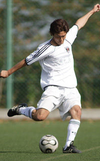 |
|
Shigeru Chino fire home his first goal of TML5 |
Suffering Jets.
Hanno Misugidai, Saturday 20th October,
Sala recorded their highest ever league victory over a depleted Jets side on Saturday amongst the mountains of Hanno, in distant Saitama. It’s a nice little pitch though a bit on the short side.
Sala got out of the blocks quickly and piled the pressure on the Jets backline with neat, short passing and some pace on the flanks.
In fact there were so many chances in the opening fifteen minutes that it would be fair to say that Sala were extremely unlucky not to find themselves four or five goals to the good. Toby and Dhugal could each have had a first half hat trick, and on another day probably would have. more ...
AH.
Jets 2nds Blunder to 3-2 Win
Hanno Misugidai, Saturday 20th October,
A beautiful sunny afternoon in the mountains of Hanno, the maple leaves a burnished orange with the first hint of autumn, yet it was a worried Cap’n Dez who looked to the horizon two minutes before kick-off, wondering if his team was ever going to arrive. Warm-up was perfunctory and a slightly under-prepared Jets side took the field against the unknown quantity of the Panthers. more ...
CP.
BFC Do Number on their Little Bruv.
 |
|
Captain Jon Day Gets his first of the season to help BFC overcome Vags. |
ASIJ, Sunday 21st October,
Historic. Titanic. Very, very noisy. BFC did a number on the Vags in a high-decibel TML clash, winning 5-0 to preserve their 100 percent start to the season.
Skipper Jon Day scored twice as BFC went on one in the second half. There was much swearing. A shaky truce was finally declared late that night.. more ...
AH.
BFC Unable to Improve Their 100% Record
ASIJ, Sunday 21st October,
The year was 2087 and little Sid Lloyd III looked at his Puma-sponsored personal info-pad showing a match report from 22 October 2007. “5-0! That must ‘ave been a right ‘ammering” he said, mimicking the accent of his Great Great Grandfather, old man Lloyd, or Snowy, as he was now affectionately known. Snowy had given him the info-pad from his turbo wheelchair a few days earlier but if little Lloyd had witnessed the game in person, as is so often said, he would have seen a different match than the one the result suggested. more ...
HS.
YCAC 2nds Start at Pace.
YC&AC, Sunday 21st October,
Somewhat later than the rest of the League, YCAC2's finally got their 07/08 TML season underway against Shane at the YCAC. Although we had done a bit of pre-season, we are not normally strong starters and were keen to make an exception this year. The team had a new look to it (and not only because of the nifty new grey strip). We welcomed back some old boys, some new faces (Nigel, Nick, Harty and Mikey) and were missing a few due to RWC and holidays. more ...
SM.
| 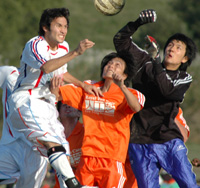 |
|
Ken Hersche saved Lions some blushes by scoring against the 9 man Dutch FC. |
Lions Make Hard Work of 9 Man DEFC
Misato, Sunday 21st October,
On a day where Lions were missing 1 or 2 key players in defence and midfield, the least worry should have been the attack. Dutch Embassy started with 8 players, and went up to 9 players after 15 minutes or so. Lions had 15 players, 7 of those are attacking players. Playing against an incomplete team should be difficult, because of sitting back, meaning less chances created. BUT!, that wasnt the case! Dutch Embassy had 1 attempt at goal and a couple of corners throughout the game, with Lions creating enough chances to give Dutch Embassy a negative goal difference that would take them 2 seasons to recover from! more ...
HS.
That'll Do Nicely
YC&AC, Saturday 20th October,
Since the TML started the Geckoes had played the Swiss eight times in the league and never picked up a point, in fact they’d only scored four goals so it’s fair to say that the Swiss would have been feeling quite confident going into the game. However the Geckoes showed when they played BFC a couple of weeks ago, the majority of the game with ten men, that they are no pushovers and they certainly proved that during the game. more ...
RK.
Footy Japan to Organize 2 Day New Year 7's
OI FUTO, 15th October,
Finally, Footy Japan are able to offer a tournament along the lines of the ones many players have been travelling to in SE Asia. A 2-day affair, with qualifying followed by knockout rounds. Due to the lack of availability of grounds, we've had to wait til now to get somewhere suitable and Oifuto (Dai Ni!!!!) has finally given us the chance. On the weekend of January 5th & 6th, 2008, we will hold the New Year 7's and are hoping to attract 32 teams to enter. For more details, click here.
FJ Founders, Jon & Sid have been immortalized on YouTube. Following the success of the PUMA TRIBES website, Doe Profero of London decided to make a cartoon strip of the stars although FJ's 'Jay & Silent Bob' appear to have picked up some strange accents!! Watch ...
FJ.
| 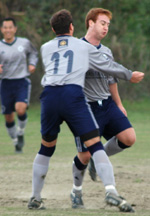 |
|
YCAC'S Anthony Savage gets a hug after his 35yd corker. |
No Luck Say Irish, Just Grit!
Misato, Sunday 14th October,
Some would say the "luck of the Irish" had something to do with the comeback the Celts pulled off at Misato, 0-3 down against YCAC with 10 minutes of the second half gone; who would have thought that the game could end in a draw. Today, there were no four leaf clovers or lucky leprechauns around, just some good old fashion grit, determination, strength of character, confidence & team spirit from the lads to get back into a game that just ran away from us.
Once again Celts were missing some regular first team players and having two players failing the early morning fitness test meant a mere 12 players available with two of them having just played 80 minutes in the earlier 2nd division game.. more ...
SY.
| 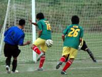 |
|
Usually a keeper, Hitoshi Ono shows the strikers how to score! |
Ravenous Albion Feast on Guarana
Misato, Sunday 14th October,
You wouldn't normally expect a team with an average age on the boneyard side of forty to come roaring out of the starting blocks like Linford Christie with a lighted firework up his jacksy, but that's exactly what happened at Misato on Sunday, as Albion Old Boys laid claim to the fastest-ever TML goal, Hitoshi Ono finishing off an eight pass move to score after 20 seconds without a Guarana player having touched the ball (and we have the video to prove it !!). more ...
TC.
| 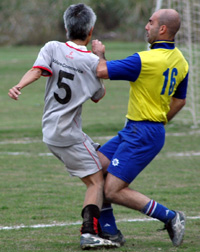 |
|
Barbarians & Maritizio finally got to Tango! |
Henry's Brace Beats Babas
Misato, Sunday 14th October,
With confusion still surrounding the previous Maritizio & Barbadians fixture over a supposed game forfeit, as suffered by the Swiss to the Hibs moments before, it was clear from the re-scheduled fixture itself that there was likely to be an added bite to this game. This being more so the cases since both teams were appearing to be potential 2nd division front runners, with similar points on the table. more ...
VG.
Ah…Tyrants
Misato, Sunday 14th October,
Wow. Stone me! Cor blimey. Shockaroony. Flawless performances from Sala certainly number fewer than hairs on Clarkey’s head, but this must have been close. On top of that, a Sala clean sheet is currently sitting between the Amur Leopard and Iberian Lynx atop the WWF’s Critically endangered/Feared extinct- species list. more ...
RC.
Jets 2nds Humble Guarana Repubic 4-0
Misato, Sunday 7th October,
The Jets 2nds finally got their season underway, and did so in style in style, claiming a 4-0 victory over the Guarana Republic. Chris the Pied Piper led the Jets Rat-Pack safely through the caverns and crevasses of the bogged Misato pitch, as the Guaranese defence was led a merry dance of step-overs and fox-trotting. Although Chris was conducting the tune, there were also notable solo performances from Hiro in his first competitive game, and from Shinichi filling in at right back. more ...
JR.
| 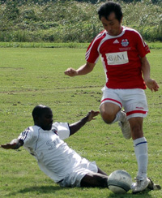 |
|
Ronaldo spent more time on the floor than Rocky Balboa in his fight against Ivan Drago |
Off the Mark
Misato, Saturday 6th October,
Sala picked up their first points of the season against BEFC with a comfortable but not convincing display against last year’s TML 2 champions.’
The pitch, which was being used for the first time since being completely flooded during the last big typhoon, had a hard crust, but was slick with mud underneath which would barely take a stud. Not the best news for Ronald, who had turned up wearing trainers.
This certainly didn’t seem to dispirit the Ugandan though, as he put in a stellar opening ten minutes on the right flank, carving chance after chance for the boys in white. The best of these was blasted into the side netting by Toby from close range; unusually wasteful from one of Sala’s more consistent goal-scorers. But not as glaring a miss as AJ forgetting to write about Brian G’s surgical scrubs in the Nagano match report. You didn’t think you’d gotten away with it did you Bris? Blue, they were more ...
RC.
JETs Just Hold on For Draw
Misato, Sunday 7th October,,
The Saitama Jets and Kanto Celts fought out a keenly contested 2-2 draw on a hot and sunny Sunday afternoon at Misato. The pitch, back in service after more than a month recovering from a spot of flooding, was in good grassy condition down the flanks, but through the middle was such that Armstrong and Aldrin would have felt at home. more ...
RK.
Celts Finally Get a Game... and a Point.
Misato, Sunday 7th October,
Kanto Celts kicked off their TML Season 5 campaign with a 2-2 draw with Saitama Jets at Misato.
 |
|
Kirk in scoring form again with is PUMA 'Golden boots'! |
The Celts were missing 7+ regular first team players; with injuries, business trips and the bank holiday weekend taking their toll, however the pre-season recruitment of several new players along with the assistance of friends and acquaintances meant we were able to field a team of 12 for our first game. more ...
SY.
Swiss Pounce on Vags late Collapse.
Misato, Saturday 6th October,
"There was a bit of waiting around before the game. The pitch was out of date chocolate cake with a nice green mould all over the surface. BFC had just snatched a win against Geckos by a Brian Doyle - as Kev Gray once called "deus ex machina" - goal. Looking on, Alex S was going to use the fudge cake to his advantage he said. We began with caution, which is never a good idea by the way, and were soon in a stop start rythym of our own making. Eyes large as marmosets, we watched the game more than we played it in the early first half. Ged was on edge, shouting his head off. Richard pensive on the line. The sun had come out, the wind rose in our faces and the first half was painfully hard work for us. more ...
GQ.
Engine Saves Stalling BFC
 |
|
Brian 'The Engine' Doyle bags all 3 points for BFC in the closing stages. |
Misato, Saturday 6th October,
BFC made heavy work of beating Geckoes 3-2 but still managed to make it four wins out of four this season. The TML champions were not helped by three late pull-outs on the morning of the game.
Had it not been for a late goal from Brian 'The Engine' Doyle, dropping two points after being 2-0 up would have stung for weeks.
TREVOR FRANCIS TRACKSUITS
Do the Geckoes play trumpets into the early hours outside the bedrooms of BFC players the night before games?
BFC turned up with a bare eleven to play Geckoes in last season's Footy Japan Cup semi-final and were beaten. BFC skipper Jon Day was fielding calls from sheepish players crying off on the way to this game. more ...
PB.
Albion Claw Win From Battle With Panthers
Yoyogi NHK, Saturday 29th September,
The NHK Ground, Yoyogi. Hard to believe that it's only a few months short of a quarter of a century since this ground provided the venue for this reporter's first game of competitive football in Japan. In those days, with a few ragged tufts of green poking forlornly through the soil, the field was still trying to kid itself that it was a grass pitch, in much the same way that Ralph Coates or Bobby Charlton used to try to kid themselves that they had a full head of hair. more ...
TC.
Geckoes On The Rampage...
Hachioji Park, Saturday 22nd September,
The Geckoes had their biggest league win for two seasons with a convincing 4-1 win over Sala in a repeat of the Footy Japan Cup Final.. The game started with the Geckoes kicking off and after a combination of errors Sala had the first corner of the game. Not the start that we had in mind, especially after Rob had highlighted Sala’s strength at set-pieces in the team talk and 15 seconds later the Geckoes were defending one. more ...
RK.
YCAC & BEFC do Battle in 8 Goal Thriller
Todoroki, Monday 24th September,
YCAC's TML5 campaign got off to a belated start with a hard fought victory over The Embassy under the lights of Todoroki on Monday night. Not even my 5th Special Brew moves me to describe it as a classic but it was certainly a ding-dong battle, end to end stuff or even a pulsating affair just to use up my quota for cliches for the entire season in one paragraph. more ...
ST.
Woszi like?! Rou on target as BFC do Hibs
 |
|
Rouven gets his head to a last minute corner, to bag the game's only goal. |
Oi Futo, Saturday 22nd September,
If you can't get to Waitrose, go to Oi Futo Dirt. An omelette-fest this was not, but champions BFC continued their 100 percent start to the season with a 1-0 win over Hibs after a late twist. more ...
PC.
Albion Lead the Way in Div 3.
Todoroki, Sunnday 16th September,
Given that both teams had started the league with a victory, albeit Albion with a walkover from Shane F.C. ,this game began as a rather tentative affair with both sides conscious of mistakes. Played in searing heat on a narrow pitch (no one can ever complain about St Mary’s ever again) it had seemed that chances would come late in the game due to tiredness. more ...
GC.
BFC Maintain Perfect Start.
Hachioji Park, Monday 17th September,
Groundhog Day for champions BFC as they beat the Saitama JETS by their favourite 4-1 scoreline to make it two wins out of two this season.Vags beating BEFC 1-0 put them third in the table and meant many of us can expect some long delays applying for new passports. more ...
BC.
JETS Brought Back to Earth.
Hachioji Park, Monday 17th September,
Saitama Jets crashed to a heavy defeat against reigning champions BFC at Hachioji Park on Monday evening with all the goals coming in the second half. Despite the one-sided nature of the score the Saitama team matched the British for long periods and will feel a little aggrieved at the margin of defeat. more ...
RK.
Vagabonds Secure First Win.
Fuchu No Mori Monday 17th September,
The Vags and Embassy picked up today where they left off last season with a repeat of the tight, hard fought but very fairly contested game that marked last season’s league encounter (finished 2-2 thanks to Adrian’s last minute equaliser). Indeed the result was more or less the only difference today. more ...
RS.
Sleepless in Seattle, Pointless in Fuchu!
Fuchu No Mori Monday 17tth September,
In the baking Fuchu sun the British Embassy and the BFC Vagabonds played out a hard-fought contest which was vastly more entertaining than any Tom Hanks/Meg Ryan rom-com. But then what isn't? more ...
SC.
Swiss Foiled by Holiday Traffic
Fujitsu Big Circus Saturday 15th September,
The Hibs came away with a forfeit win Saturday, after the Swiss fell victim to holiday traffic and arrived at the rustic Big Circus pitch 45 minutes after kick-off time. But the two teams were eager for a match and agreed to a friendly, which was as hard-fought as any of our regular matches have been more ...
JA.
Anyone for Water Polo?
 |
|
Typhoon Vicky dumped heaps of water in Tokyo's rivers causing lots of flooding. |
Misato, Saturday 9th September,
Typhoon Vicky swept it's way across Tokyo and the Kanto plain earlier this week, swelling many river to the tops of their banks and leaving the Misato pitches under meters of water.
Despite the weather being ok following the storm, the large amount of rainfall in the mountains and countryside has left the waterways straining to cope. Already 2 weekends of matches (12 matches) have been cancelled at Misato and only thanks to volunteers finding grounds have we been able to save some matches next weekend.
FJ.
Lions Set the Pace.
| 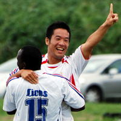 |
|
Tatsuya Ando Celebrates scoring Lions 2nd. |
Misato, Sunday 2nd September,
Lions would like to start this report by applauding a rare-to-see sportsmanship from the France left back, who kicked the ball out of play after going past the Lions right-back who pulled up with a hamstring. Although the France player could've put in a dangerous cross, especially that they were 1-0 down at the time!
All respect to France FC, talented, strong, and true sportsmanship....how football should be!
The beautiful new surface in Misato was home to a brilliant game that saw France FC wear bibs, whilst Lions wore the national French kit. The game started strongly as expected, with midfield being the battle ground.
more ...
HS.
10 Unforgettable goals!
 |
|
Barbarian Ben McMakin clears a corner. |
Misato, Sunday 2nd September,
5-all thrillers are unforgettable matches where people can remember each thrilling event in the game, aren’t they?! Well, I didn’t play in the 5-all ding dong between the Clash and Zion last season and don’t think I’ve ever seen one at a stadium or on TV. I do remember a 4-4 thriller between Charlton and West Ham where Paul Kitson scored a hat-trick for the Hammers and a young Jermaine Defoe the other while for Charlton Euell and Johansson got a brace each with Johansson scoring his second and the final equaliser of the game in the last minute. Git. Well anyway come the final whistle I thought that the Clash had won this game at Misato 5-4 and I was in it so my memory cannot be relied on very heavily, but then again the referee agreed with me until corrected by most but me and a Barbarians defender who thought it was 4-4. Sorry to bring that up Jorge. more ...
CA.
Jet's Win with Gildart Brace.
Hachioji Park, Saturday 1st September,
Saitama Jets started the new season as they ended the last with a victory over the Wall Street Geckoes at Hachioji Park through two second-half goals from Canadian poacher Nate Gildart in an open and entertaining encounter. more ...
RK.
Winning Start For Champions
| 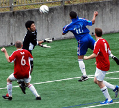 |
|
Shawn Kee scores on his debut for BFC. |
OiFuto, Saturday 1st September,
Skipper Jon Day told his team at half time what he wanted, and the team duly obliged as BFC started the defence of the TML Division 1 title with a 3-0 win over the newly promoted British Embassy FC. Goals from 17 year old Shawn on his debut, a clinical penalty by Carlos and a fine individual goal from another debutant, Jerry, saw off the Embassy in the season opener for both teams.
Lining up with Jason in goal, Leigh, James Mulligan, Brian and Ryo in defence, BFC was determined to keep tight at the back - a cornerstone of their success from last year. Pablo and Carlos worked the center of midfield putting in a huge effort, and with Shosuke and Garry starting on the wings there was plenty of creativity on display. Up front, a very young and talented forward line of Dan and Sean sought to unsettle the Embassy backline with their pace and ability on the ball. more ...
BD.
Toothless Sala Plough Familiar Furrow
 |
|
A front post cock-up from a corner sees Sala gift Swiss a 2nd own goal in a 2-0 loss. |
OiFuto, Saturday 1st September,
“The better team lost today.” Kirk commented to me as the final whistle blew, and in essence he was correct. Sala were the better team on display in terms of possession, passing, pressure and lots of other words that start with p. Unfortunately they weren't the better team in the rather more crucial area of getting the three points. more from Sala ...
RC.
The Swiss weren’t given an easy task in their first game of the ’07-’08 season, matched up with traditional rivals Sala. Great day on the turf at Oifuto, that is one of the benefits of playing against the league organizer, some quality pitches to play on. Sala looked its familiar self with a solid defensive lineup, speed across the midfield, but the same forward line which meant goals were going to be tough to come by. more from Swiss ...
KN.
| 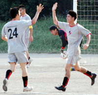 |
|
Toshi Noguchi Celebrates number 2. |
'Rope a Dope' still Working for Barbarians.
OiFuto, Saturday 25th August,
It was a blistering hot day at Oi-dirt (this pitch isn’t getting any better with age) that seemed to sap the energy out of you when standing still. Barbarians were a bit tentative after such a long lay-off, especially when the first fixture saw them drawn against a younger, fitter KGFC side.
The Barbarians apprehension was soon realized to be misplaced as the defense settled into there usual solid shape, soaking up everything KGFC could throw at them. more ...
CR.
 |
|
Lions new keeper, Orlando Torres. pulls off a smart save. |
Lions Roar into Season 5.
OiFuto, Saturday 25th August,
Lions kick-off the Division 2 league on a hot Saturday in OiDai1, against the newly relegated Jetro. Lions had a strong 15-man squad, whereas Jetro had only 10 players.
Lions opted to start last year's top scorer Gaafar Somi, who was nursing a groin injury, but his quality in dictating the midfield was next to none, and was evident from the vast spells of passing that Lions enjoyed with Jetro kept at bay.
Lions almost scored in the first 3 minutes when Ahmed Gaafar outran the defence, only to see his shot pushed away to a corner. Soon afterwards, Ahmed was again close to scoring, this time the ball bouncing off the post back into the keeper's hands. more ...
HS.
| 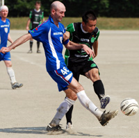 |
|
Keita Narama smashes a shot against the bar in the season opener. |
Kick Off
Hibs Edge Vags in Opening Match
OiFuto, Saturday 25th August,
A good, hard fought, competitive game of football to start the season. The one thing confirmed for the Vags today is that we are comfortable in the first division. Over the piece the Hibs probably just edged it and the Vags flagged a bit in the last 15 minutes but it was touch and go for most of the game. more from Vags...
RS.
We had the honor of welcoming the Vagabonds to the first division this year, and weren't sure what to expect. Word on the street was that they had a lot of help from BFC players last season, which is obviously no longer available...more from Hibs...
JA.
TML Season 5 Bigger & Better (Hopefully)
Tokyo, August 17th,
Well it's just 8 days away now, till the opening matches of TML's season 5 which promises to be the biggest & best yet. Season 5 will see the League increasing to 3 Divisions with a total of 28 teams (4 more than last year) 5 of which are new teams. These new teams are joining with the lower half of last years Div 2 to form the new Division 3. All teams will now play the other teams in their division twice. Divisions 2&3 have been limited to 8 teams as even this will put a huge strain on resources (grounds). Unfortunately 6 teams had to be turned away from joining the league, although we hope to be able to allow them to play in the future.
The season will Kick off on Sat 25th August and run through till June next year all going well, but all players & supporters are urged to help their team captains & TML by supplying necessary documents to help in the booking of grounds, otherwise we may become known as the Misato Metropolis League!!
FJ.